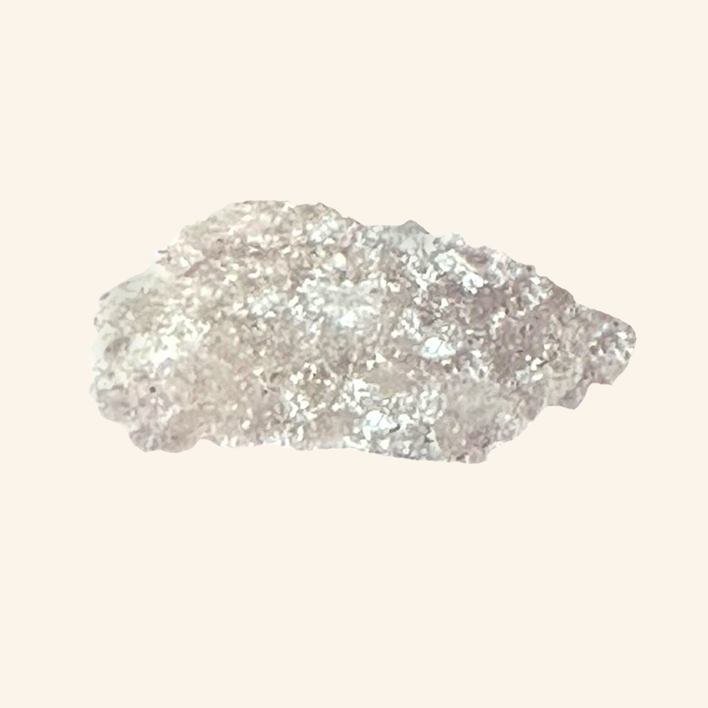
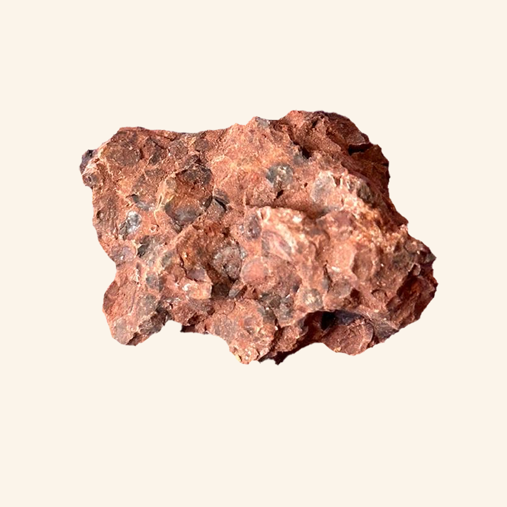

Известняки
Известняк плотный
Известняк ракушечник
Мел
Мрамор белый
Полезные испопаемые
Гранит
Полевой шпат
Кварц
Слюда белая
Слюда черная
Песчаник
Мел
Мрамор
Соль каменная

Торф
Каменный уголь
Бурый уголь
Антрацит
Магнитный железняк
Красный железняк
Бурый железняк
Медный колчедан
Боксит

Плотные известняки имеют в своем составе как обломки панцирей и
раковин морских животных, так и мелкие зерна известкового шпата.
Этот вид наиболее часто встречается в природе в виде толстых слоев
породы. Основа известняка – карбонат кальция (50-95%). Остальное –
это кварц, доломит, полевой шпат и другие минералы (5-50%). Именно
из-за наличия в составе минералов камень имеет различные оттенки.
Цвета плотного известняка – преимущественно желтый, бурый и серый.
Плотные известняки используются при облицовке стен. Белокаменные
церкви сложены именно из этой породы.
Подробнее
- Формула-CaCO3
- Температура разложения-2442 ± 1 ℉ и 1517 ± 1 ℉
- Средняя плотность-2800 кг/м³
- Твердость по шкале Мооса-3
- Предел прочности при сжатии- 50-150 МПа
Ракушечник - это разновидность известняка - пористой осадочной органогенной горной породы средней твердости, сформовавшейся из останков морских организмов, дробленых или целых раковин, панцирей, моллюсков. Чаще всего ракушечник применяется в строительных работах: постройка декоративных садовых элементов, сооружение заборов и дачных построек, украшение фасадов стен и прочее.
Подробнее
- Формула-СаСО3
- Температура разложения-2442 ± 1 ℉ и 1517 ± 1 ℉
- Средняя плотность-2600 кг/м³ (зависит от содержания примесей)
- Твердость по шкале Мооса-3
- Предел прочности при сжатии-10МПа
- Радиоактивность-88,2 Бк/кг
Гранит-это магматическая плутоническая порода, на 60-65% состоящая из полевого шпата и на 25-35% - из кварца. Именно кварц образует в камне неправильные изометричные зерна, сросшиеся с зернами полевого шпата. В граните также присутствует небольшое количество слюды (биотита или мусковита). Химический состав минерала характеризуется повышенным содержанием щелочей и небольшим процентным составом железа и магния.
Цвет гранита варьируется от белого и розового до практически красного, и зависит от пропорций минералов в составе. Например, если в камне присутствует большое количество калиевого полевого шпата, камень имеет розовый оттенок, если при этом присутствует оксид железа, материал приобретает насыщенный красный цвет. Наряду с мрамором, гранит – один из самых востребованных натуральных материалов в строительной и отделочной сфере. Он используется в строительстве, облицовочных работах, засыпке дорог, производстве деталей интерьера.
Подробнее
- Формула-SiO2
- Температура плавления-до 700°С
- Плотность-2600кг/м³
- Твердость по шкале Мооса - 5-7
- Предел прочности при сжатии-300МПа
Полевой шпат-широкораспространённый(почти половина массы земной коры), в частности —
породообразующий минерал из класса силикатов. Полевым он именуется по причине частого его
обнаружения на шведских пашнях. Если взглянуть на разные образцы полевого шпата, то можно заметить,
что этот камень бывает разнообразных цветов. Однако на самом деле сам шпат почти бесцветный, а
окраску ему придают посторонние примеси. Шпат твердый, но хрупкий. Это означает, что если взязять
его в руки - просто смять его не получится, а вот если ударить обо что-то - шпат может расколоться.
Подробнее
- Формула-КAlSi3O8
- Температура плавления-1160°С
- Средняя плотность-2750кг/м³
- Твердость по шкале Мооса - 5-6.5
- Предел прочности при сжатии- 120-170 МПа
Кварц - наиболее часто встречающийся в природе минерал. Цвета кварца могут быть самыми
разнообразными – от совершенно прозрачного бесцветного, до насыщенного красного, желтого, синего
оттенка. Встречается кварц и черного цвета. Кристаллы кварца образуются при остывании раскаленной
магмы, вырывающейся из толщи земли при извержениях и разломах земной коры. Залежи кварца могут
представлять из себя как хаотично разбросанные кристаллы разных размеров, так и целые прослойки
этого полупрозрачного минерала. Кварц используется в оптических приборах, в генераторах ультразвука,
в телефонной и радиоаппаратуре, в электронных приборах.
Подробнее
- Формула-SiO2
- Температура плавления-1700°С
- Средняя плотность-2600кг/м³
- Твердость по шкале Мооса - 7
- Предел прочности при сжатии- 2000 МПа
Слюда — один из наиболее распространённых породообразующих минералов интрузивных, метаморфических и
осадочных горных пород, а также важное полезное ископаемое. некрепкий материал. Она имеет слоистую
структуру, то есть кусок минерала состоит из множества тонких слоев, которые несложно разломать на
кусочки без использования инструментов. Слои слюды достаточно ломкие, но могут слегка гнуться.
Добывают этот минерал открытым или подземным способом. Слюда входит в состав пород, имеющих
вулканическое происхождение. В наше время слюда применяется как электроизоляционный материал, а
также в авиа- и радиотехнике.
Подробнее
- Формула-AlSi3O10
- Температура плавления-1145°С-1400°С
- Плотность — 2770 кг/м³ (мусковит), 2200 кг/м³ (флогопит), 3300 кг/м³ (биотит)
- Твёрдость слюды по минералогической шкале - 2,5-3
Слюда — один из наиболее распространённых породообразующих минералов интрузивных, метаморфических и
осадочных горных пород, а также важное полезное ископаемое. некрепкий материал. Она имеет слоистую
структуру, то есть кусок минерала состоит из множества тонких слоев, которые несложно разломать на
кусочки без использования инструментов. Слои слюды достаточно ломкие, но могут слегка гнуться.
Добывают этот минерал открытым или подземным способом. Слюда входит в состав пород, имеющих
вулканическое происхождение. В наше время слюда применяется как электроизоляционный материал, а
также в авиа- и радиотехнике.
Подробнее
- Формула-AlSi3O10
- Температура плавления-1145°С-1400°С
- Плотность — 2770 кг/м³ (мусковит), 2200 кг/м³ (флогопит), 3300 кг/м³ (биотит)
- Твёрдость слюды по минералогической шкале - 2,5-3
Песчаник - осадочная горная порода, распространенная в поверхностной части земной коры. Основной
способ образования – разрушение и перенос горных пород водой с последующей цементацией отложений. По
сути, это песок, сцементированный природным образом под давлением воды. В цветовой гамме преобладают
светлые оттенки: желтый, бежевый, красный, янтарный.
В составе песчаника чаще всего преобладает кварц. Сопутствующие минералы – полевые шпаты, слюда,
глауконит.
Песчаник широко применяется в строительстве в качестве стенового и облицовочного материала, бутового
камня, щебня различного назначения. Кварцевый песчаник с содержанием кремнезёма SiO2 выше 95 %
используется для производства динаса, в качестве флюса при выплавке меди и никеля, для изготовления
стекла и другие.
Подробнее
- Формула-SiO2( как у кварца, из-за его большого содержания)
- Температура плавления-1230 °C
- Плотность – 2250-2670 кг/м³
- Твердость по шкале Мооса- 4-5
- Предел прочности при сжатии- 10-140МПа
Мел — разновидность известняка, осадочная горная порода органического (зоогенного) происхождения,
состоящая из скрытокристаллического кальцита. Имеет белый цвет, мягкая и рассыпчатая, нерастворимая
в воде. Основу химического состава мела составляет карбонат кальция с небольшим количеством
карбоната магния, но обычно присутствует и некарбонатная часть, в основном оксиды металлов. Мел —
необходимый компонент мелованной бумаги, используемой в полиграфии для печати качественных
иллюстрированных изданий, так же используется в виде кормовой добавки, для письма на досках в школе.
Молотый мел широко применяется в качестве дешёвого материала (пигмента) для побелки, окраски
заборов, стен, бордюров, для защиты стволов деревьев от солнечных ожогов.
Подробнее
- Формула-СаСО3
- Температура разложения-2442 ± 1 ℉ и 1517 ± 1 ℉
- Средняя плотность-2400кг/м³
- Твердость по шкале Мооса - <1
- Предел прочности при сжатии-10МПа
Белый мрамор-это кристаллически-зернистый минерал, образующийся в процессе метаморфизма карбонатных пород (известняков или доломитов) под воздействием высоких давлений и температур. Чистая порода имеет белоснежный цвет и встречается достаточно редко. Это статуарный, мелкозернистый вид камня, который применяется в скульптурном искусстве. Даже небольшой процент примесей существенно влияет на окраску камня, причем оттенок может меняться в пределах одного месторождения или даже блока. Белый скульптурный мрамор - это однородная порода с мелкозернистой структурой и высокой пластичностью, благодаря чему камень этого типа легко поддается резке и шлифовке.
Подробнее
- Формула-CaCO3
- Температура разложения-2442 ± 1 ℉ и 1517 ± 1 ℉
- Средняя плотность-2775кг/м³
- Твердость по шкале Мооса - 2.5-3
- Предел прочности при сжатии-100-300 МПа
Каменная соль — осадочный минерал, состоящий преимущественно из хлористого натрия. Состав примесей зависит от характеристик месторождений.
Каменную соль по преимуществу добывают из подземных залежей. Каменная соль имеет грязно-серый цвет. В залежах каждого конкретного месторождения содержатся различные примеси, поэтому стабильной и/или равномерной чистоты каменной соли добиться почти невозможно.
Каменную соль используют в котельнях для химической очистки воды в теплосетях. Натрий хлористый используется в производстве моющих средств, мыловарении и др.
Подробнее
- Формула-NaCl
- Температура плавления-801°C
- Плотность-2173 кг/м³
- Твердость по минералогической шкале 2
Торф — осадочная рыхлая горная порода, находящая применение как горючее полезное ископаемое. Торф образуется в процессе естественного отмирания и неполного распада болотных растений в условиях избыточного увлажнения и затруднённого доступа воздуха. Процесс торфонакопления не заканчивается, он происходит постоянно. Как правило, торф либо лежит на земной поверхности, либо очень близко прилегает к ней (до 10-20 метров вглубь). А это делает добычу полезного ископаемого довольно простой. Торф используется как твердое топливо, теплоизоляционный материал, удобрение для почвы а так же для получения торфяного газа.
Подробнее
- Формула-Нет точной химической формулы, так как это разложившиеся растения.
- Плотность - 1400-1700 кг/м³
- Теплота сгорания — 24 МДж/кг
Каменный уголь — твёрдое горючее полезное ископаемое, промежуточная по содержанию углерода форма угля между бурым углём и антрацитом, образуется вследствие длительного метаморфизма растительных остатков. Свойства материала различны. Они зависят от стадии метаморфизма (степени углефикации), строения породы, особенностей месторождения и других факторов. Все они в свою очередь влияют на качество и способы применения полезного ископаемого. Каменный уголь используется как бытовое, энергетическое топливо, сырье для металлургической и химической промышленности, а также для извлечения из него редких и рассеянных элементов.
Подробнее
- Формула-С2(сильно спрессованный углерод)
- Температура сгорания-1100 °C
- Плотность-1500 кг/м³
Уголь — органическое вещество, которое образовалось под воздействием давления и температур из залежей торфа. Сначала торфяные останки трансформировались в бурый уголь, потом — в каменный, затем — в антрацит. Бурый уголь — самый твердый и самый влажный вид угля. Он содержит 30–40% влаги. Он быстро окисляется и растрескивается на открытом воздухе, при этом теряет свою теплотворную способность. Чтобы предотвратить этот процесс, на ТЭЦ тщательно укатывают угольные кучи на складах, перекрывая доступ воздуха к внутренним слоям угля. Бурый уголь используется как энергетическое и коммунально-бытовое топливо, для производства угольных брикетов, газообразного и жидкого топлива, углещелочных реагентов гуминовых кислот, воска, металлургического кокса, извлечения редких и рассеянных элементов.
Антрацит-самый древний из ископаемых углей, уголь наиболее высокой степени углефикации. Лучший сорт каменного угля, отличающийся чёрным цветом, сильным блеском, большой теплотворной способностью. Высшая разновидность угля — твёрдого горючего полезного ископаемого, образованного из растительных остатков в результате гумификации и углефикации. Уголь чёрно-серого цвета с металлическим блеском, твёрдый, высокой плотности и высокой электропроводности.
Подробнее
- Удельная теплота сгорания - 22-31 МДж/кг
- Формула-С2
- Плотность-1500кг/м³
Антрацит-самый древний из ископаемых углей, уголь наиболее высокой степени углефикации. Лучший сорт каменного угля, отличающийся чёрным цветом, сильным блеском, большой теплотворной способностью. Высшая разновидность угля — твёрдого горючего полезного ископаемого, образованного из растительных остатков в результате гумификации и углефикации. Уголь чёрно-серого цвета с металлическим блеском, твёрдый, высокой плотности и высокой электропроводности.

Подробнее
- Формула-С2
- Удельная теплота сгорания - 22-31 МДж/кг
- Плотность-1500кг/м³
Магнитный железняк-широко распространённый минерал чёрного цвета, является важной железной рудой, наряду с гематитом. Первый магнитный материал, известный человечеству. Магнетит легко узнается по постоянному железно-черному цвету, по черной черте и по магнитности.
Из руды магнитного железняка выплавляют железо, которое идет на производство всех видов сплавов, главным образом, стали и чугуна. Также магнетит используют для получения фарфора, а особенно – в химической промышленности, благодаря тому, что железо легко вступает во многие реакции.
Образуется магнетит в зоне контакта гранитных магм, магм сиенитового, диоритового состава с известняками.
Подробнее
- Формула-Fe3O4
- Твердость по шкале Мооса- 5.5-6.5
- Температура плавления-1954°C
- Плотность-5,175 г/см³.
Магнитный железняк-широко распространённый минерал чёрного цвета, является важной железной рудой, наряду с гематитом. Первый магнитный материал, известный человечеству. Магнетит легко узнается по постоянному железно-черному цвету, по черной черте и по магнитности.
Из руды магнитного железняка выплавляют железо, которое идет на производство всех видов сплавов, главным образом, стали и чугуна. Также магнетит используют для получения фарфора, а особенно – в химической промышленности, благодаря тому, что железо легко вступает во многие реакции.
Образуется магнетит в зоне контакта гранитных магм, магм сиенитового, диоритового состава с известняками.
Подробнее
- Формула-Fe3O4
- Твердость по шкале Мооса- 5.5-6.5
- Температура плавления-1954°C
- Плотность-5,175 г/см³.
Магнитный железняк-широко распространённый минерал чёрного цвета, является важной железной рудой, наряду с гематитом. Первый магнитный материал, известный человечеству. Магнетит легко узнается по постоянному железно-черному цвету, по черной черте и по магнитности.
Из руды магнитного железняка выплавляют железо, которое идет на производство всех видов сплавов, главным образом, стали и чугуна. Также магнетит используют для получения фарфора, а особенно – в химической промышленности, благодаря тому, что железо легко вступает во многие реакции.
Образуется магнетит в зоне контакта гранитных магм, магм сиенитового, диоритового состава с известняками.
Подробнее
- Формула-Fe3O4
- Твердость по шкале Мооса- 5.5-6.5
- Температура плавления-1954°C
- Плотность-5,175 г/см³.
Халькопирит(устар. медный колчедан) — минерал, который добывается с древних времен. Он является одним из старейших медных образований на планете. Крупные кристаллы редки и имеют искажённый тетраэдрический облик. Грани, как правило, покрыты глубокой грубой штриховкой. Характерно двойникование, обычны двойники прорастания. Образует сплошные зернистые агрегаты, вкрапленность, прожилки в карбонатах и других сульфидах. Цвет золотисто-жёлтый, по оттенку в отличие от латунно-жёлтого пирита напоминающий червонное золото, из-за этого получивший название «золотая обманка». Месторождения халькопирита можно встретить практически на всех континентах. В чистом виде камень почти не встречается — в основном в составе с кварцевыми и хризолитовыми минералами. Халькопирит – основная руда для получения меди. Медь применяется в электротехнике, в машиностроении, для получения сплавов (бронза, латунь, томпак), для изготовления лабораторных принадлежностей, змеевиков, перегонных кубов, холодильников, труб.
Подробнее
- Формула-CuFeS2
- Твердость по минералогической шкале- 3.5-4
- Плотность-4200кг/м³
Боксит — горная порода, важнейший источник алюминия. Свое название материал получил в честь той местности, где был обнаружен и в 1821 году впервые описан геологом Пьером Бертье. Боксит — это алюминиевая руда в виде каменистой или глиноподобной породы, однородной или слоистой. Минерал сформировался в результате латеритного выветривания щелочных, кислых, иногда основных пород или осаждения в морских и озёрных бассейнах значительных количеств глинозема, содержащихся в переносимых молекулярных растворах и золях. Многообразием отличается цвет породы: от белого до темно-красного, хотя наиболее распространены бурый и кирпичный. Минерал боксит с незначительным содержанием железа применяется при изготовлении огнеупорных, быстротвердеющих цементов. Кроме алюминия из рудного сырья извлекают железо, титан, галлий, цирконий, хром, ниобий и TR (редкоземельные элементы). Бокситы используют для производства красок, абразивов, сорбентов.
Подробнее
- Формула-Al2O3
- Твердость по шкале Мооса- 2-7
- Плотность изменяется от 1800 кг/м3 (рыхлые) до 3200 кг/м3 (каменистые)